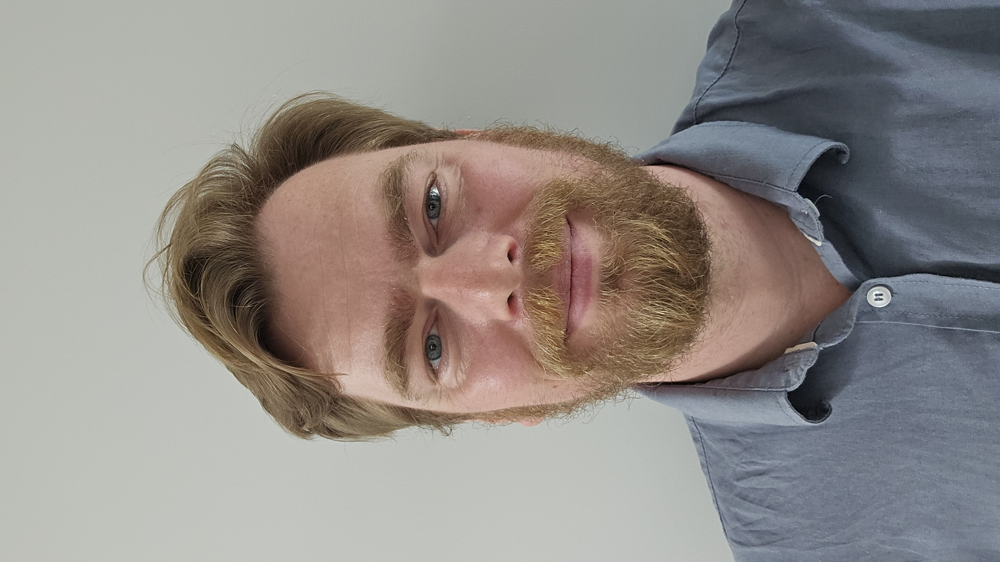

Jan van Roestel
Postdoc at ISTA & BlackGEM Project Scientist
Institute of Science and Technology Austria
Research Interests: Time-domain astronomy, LISA gravitational wave sources, white dwarf binaries and white dwarfs with planetary systems, data mining/machine learning/GPU programming

About Me
I am an observational astronomer and focus on white dwarf binary stars, specifically systems that emit gravitational waves that will be detectable by the LISA gravitational wave satellite. I am an expert in time-domain astronomy and the use of optical time-domain survey telescopes, including the Zwicky Transient Facility and Rubin/LSST. I am also the project scientist for the BlackGEM telescope project which is aimed at finding the optical signals of neutron-star mergers and studying the variable night sky.
Current: Since September 2025, I am a postdoc at the Institute of Science and Technology Austria (ISTA), where I use various large surveys to study variable white dwarfs such as binary white dwarfs that are gravitational wave sources, planets around white dwarf stars, and massive, rapidly rotating white dwarfs that are the merger products of two white dwarfs.
Previous: From 2022 to 2025, I was a VENI-postdoc fellow at the University of Amsterdam working on "The life and death of white dwarf binary stars". From 2018 to 2022, I was a postdoc at Caltech where I worked on the Zwicky Transient Facility (ZTF) project as the Galactic science working group (co-)lead.
News
-
September 2025
New Position at ISTA
Started as postdoc at the Institute of Science and Technology Austria, working with Prof. Ilaria Caizzo and PhD students Aayush Desai and Andrei Cristea.
-
May 2025
New Paper
Published "Eclipsing white dwarfs from ZTF: II. Seven eclipsing double white dwarfs". In a search for eclipsing white dwarf using ZTF, I found 7 eclipsing double white dwarfs. Previously, short period double white dwarfs were assumed to have circular orbits, but in this work I show that two of them are slightly eccentric. This is intresting from a formation perspective, but also because is (slightly) changes the gravitational wave signal that LISA will detect.